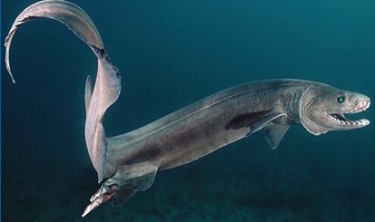

СЕМЕЙСТВА :Chlamydoselachidae.
ГЛУБИНА:от 500 до 1000 метров,
КОГДА ОТКРЫЛИ: ученым Людвигом Дёдерлейном, который посещал Японию между 1879 и 1881 годами и привёз в Вену два образца
Обитает в глубоководных зонах Атлантического и Тихого океанов. Её можно встретить у берегов Японии, Австралии, США, Португалии, а также в восточной Атлантике. Чаще всего акула обитает на глубинах от 500 до 1000 метров, но иногда её фиксировали на глубинах до 1500 метров. Однако в некоторых регионах, например, в заливе Суруга у берегов Японии, она поднимается на глубину около 50–100 метров, особенно в зимние месяцы, когда температура воды понижается.
Учёные предполагают, что ведёт малоподвижный образ жизни, медленно двигаясь в толще воды в поисках пищи. Длина тела и особая структура позвоночника позволяют акуле совершать молниеносные рывки, схожие с движениями змеи, что помогает при охоте. Ночью плащеносные акулы могут совершать вертикальные миграции и подниматься в поисках добычи к самой поверхности воды.
Организм приспособлен для жизни на глубине: печень большого размера, насыщена липидами низкой плотности, что позволяет акуле находиться на глубине без особых физических усилий. Плащеносная акула размножается бесплацентарным живорождением.

наверх